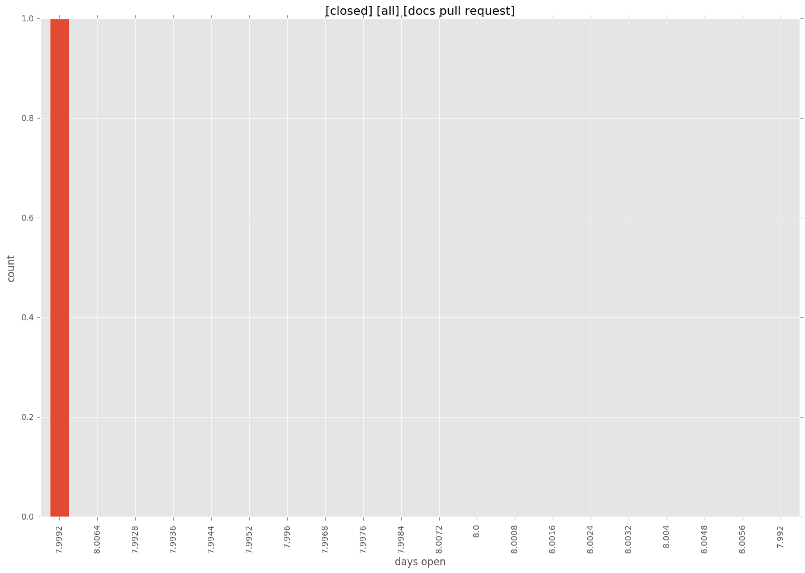
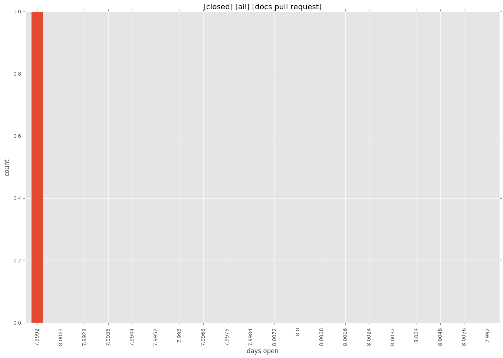

authors
- erjohnso
maintainers
- supertom
contributors
- mpdehaan : 6 commits
- abadger : 6 commits
- viglesiasce : 5 commits
- clconway : 14 commits
- erjohnso : 30 commits
- franckcuny : 14 commits
- Hypermanzer : 6 commits
- jctanner : 5 commits
- pmoosh : 5 commits
total issue counts
bugfix pull request: 11
pullrequest: 21
docs pull request: 1
feature pull request: 9
feature idea: 1
issue: 3
bug report: 2
issue history
pullrequest history
days open by issue type
feature pull request
count: 13
std: 57.1119009557
min: 0
max: 185
median: 9.0
mean: 40.4615384615
all
count: 26
std: 44.3783731112
min: 0
max: 185
median: 1.0
mean: 23.0
pullrequest
count: 0
std: nan
min: nan
max: nan
median: nan
mean: nan
docs pull request
count: 1
std: nan
min: 8
max: 8
median: 8.0
mean: 8.0
bugfix pull request
count: 11
std: 14.4177920388
min: 0
max: 48
median: 0.0
mean: 4.54545454545
feature idea
count: 0
std: nan
min: nan
max: nan
median: nan
mean: nan
issue
count: 0
std: nan
min: nan
max: nan
median: nan
mean: nan
bug report
count: 1
std: nan
min: 14
max: 14
median: 14.0
mean: 14.0
closures grouped by total days open
 
